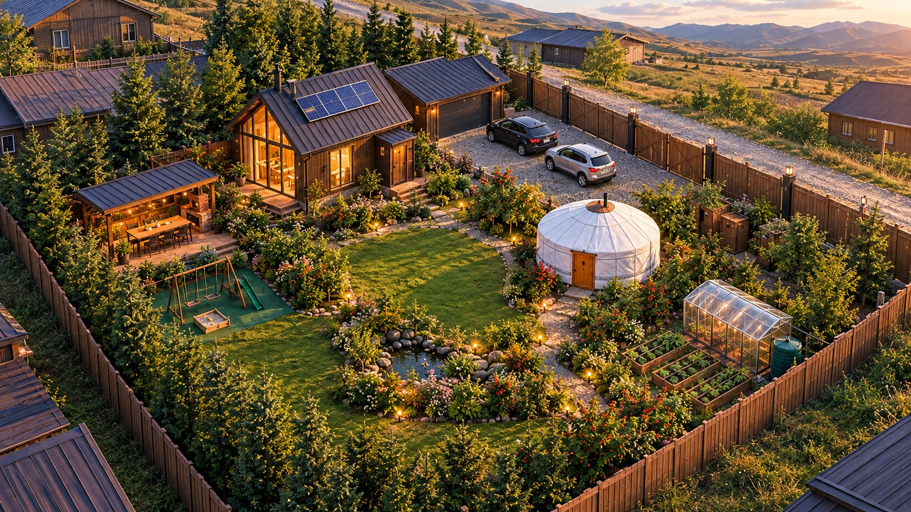
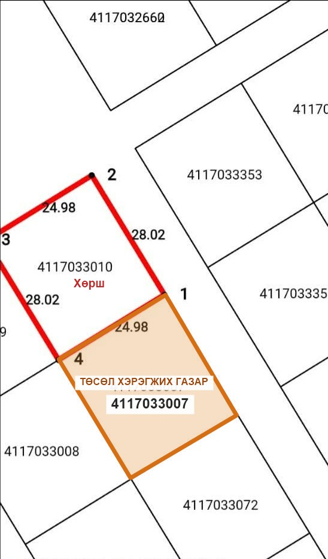
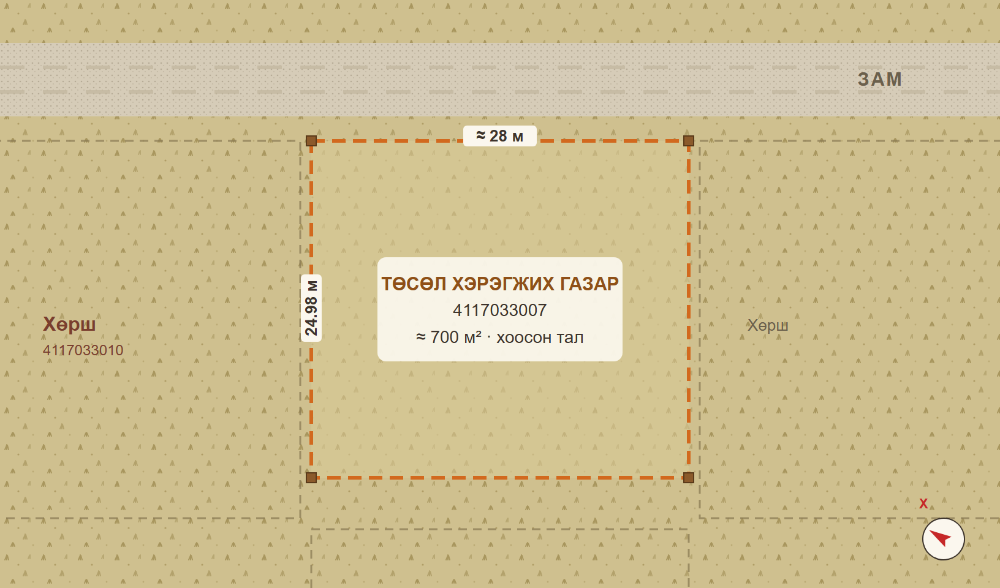
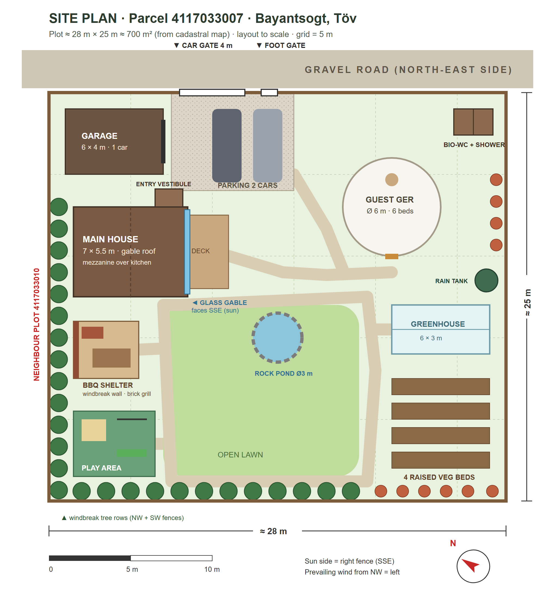
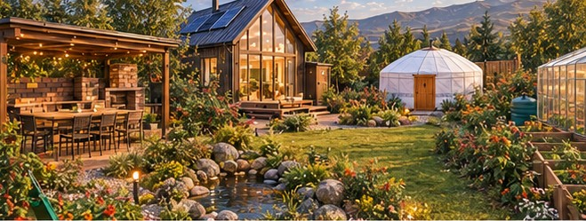
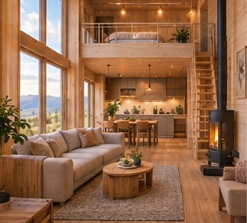
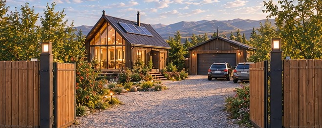
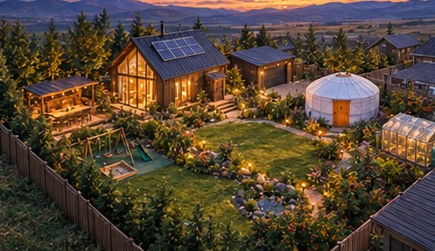
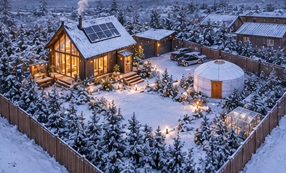

2
хүн жилийн турш
Дулаан, хэмнэлттэй жижиг байшинд байнга амьдарна

ТӨВ АЙМАГ · БАЯНЦОГТ СУМ · ИХ БУЛАГ
Хоосон 700 м² газрыг жилийн турш амьдрах тав тухтай хашаа болгох төлөвлөгөө
Нэгж талбар 4117033007 · ≈ 25 × 28 м · Концепц төсөл
01 · ЭХЛЭЛ
| Нэгж талбар | 4117033007 |
|---|---|
| Хаяг | Төв, Баянцогт, Их булаг |
| Хэмжээ | 24.98 × ≈ 28 м |
| Талбай | ≈ 700 м² (0.07 га) |
| Замын тал | Зүүн хойд (≈ 28 м) |
| Нарлаг тал | Зүүн өмнөд (≈ 25 м) |
| Хөрш | Баруун хойд талд 4117033010 |
24.98 м нь хөрш газартай нийтийн хил. ≈ хэмжээг кадастрын зургаас тооцов.

02 · ӨМНӨ БА ДАРАА
Гулсуурыг хажуу тийш чирж өмнө ба дараах төрхийг харьцуулна уу.

03 · ХЭРЭГЦЭЭ
2
Дулаан, хэмнэлттэй жижиг байшинд байнга амьдарна
6
Тусдаа гэрт хонож, саравчинд хамт хооллоно
4
Өөрсдийн ногоо, жимсийг тарьж ургуулна
1
Элс, дүүжин, гулсуур бүхий аюулгүй хэсэг

04 · МАСТЕРПЛАН
Мастерпланыг метрийн хэмжээтэйгээр зурсан. Торны нэг нүд 5 м.
05 · БҮСЧЛЭЛ
| Хэсэг | Хэмжээ | Байрлал |
|---|---|---|
| Үндсэн байшин | 7 × 5.5 м + мезанин | Баруун хойд хэсэг |
| Гарааш | 6 × 4 м | Хойд булан, замын хажууд |
| Зогсоол | 2 машин | Хаалганы ард |
| Зочны гэр | Ø 6 м · 6 ор | Зүүн хэсэг |
| Био-жорлон + шүршүүр | 2.4 × 1.5 м | Гэрийн ард, буланд |
| Мах шарах саравч | 4 × 3.5 м | Баруун хойд хашааны дагуу |
| Тоглоомын талбай | 5 × 4 м | Баруун булан |
| Хүлэмж + 4 мандал | 6 × 3 м | Өмнөд нарлаг булан |
| Хадны цөөрөм | Ø 3 м | Зүлгэн дунд |
Хэмжээнүүд урьдчилсан. Эцсийн хэмжээг зураг төслийн шатанд тогтооно.
06 · ҮНДСЭН БАЙШИН


07 · ДОТОР ОРЧИН
Зочны өрөө, хоолны ширээ, гал тогоо, угаалгын өрөө 1.75 × 2 м
Гал тогооны дээр байрлах унтлагын хэсэг
1.7 × 1.1 м, хүйтэн салхийг гэрт оруулахгүй
08 · ОРЦ

09 · УЛИРАЛ БҮРД

Цонх, замын нам гэрэл дулаан туяа өгнө

Битүү зуух, дулаалгатай байшинд жилийн турш амьдарна
10 · ҮЕ ШАТ
1
2
3
Төсвийн хүрээ ≈ 100 сая ₮ (урьдчилсан) · эхний ээлжинд байшин, ус, бохирын шийдэлд төвлөрнө
11 · ДАРААГИЙН АЛХАМ